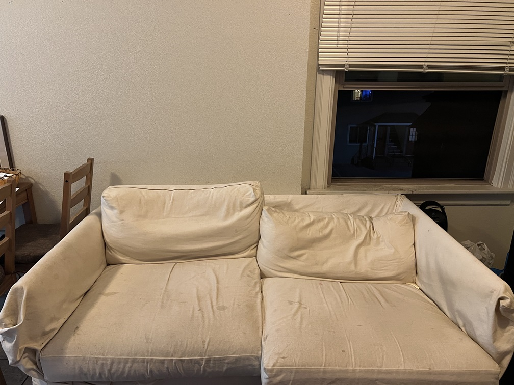
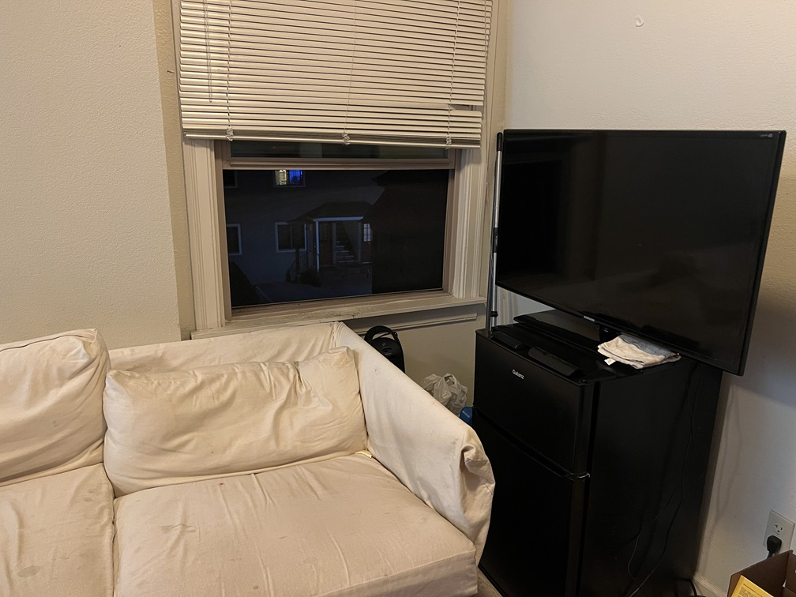
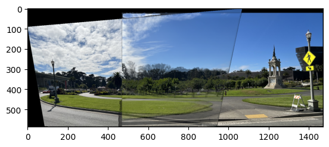
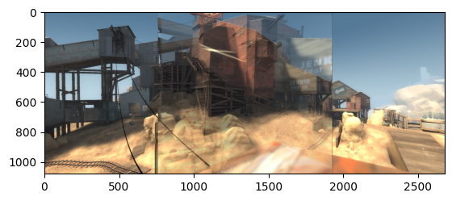

This project is split into two parts with the first one covering how to warp an image, and mosaicing, effectively allowing someone to stitch images together based on correspondence points
I took pictures both indoors and outdoors to get more coverage. I wondered if the difference in lighting within sunlight would cause issues within the stitching
|  |  |
|
|
|
|
|
|
The images are selected and taken intentionally so that some elements overlap from picture to picture
Using the same correspondence tool provided by the spec of project 3. I labeled corresponding points from a pair of images using their clicking tool.

|
|
|
The calculation for the homography matrix, is effectively solving b = HA for H.
In this equation, b is the resulting point locations, A is the initial source image point locations, and H is the homography matrix, a 3x3 transforming matrix
Matrices A and b are required to be homogenous matrices, where each column must end with a 1 following the x and y coordinates of a point. As a result of this, when using the homography matrix we must divide all entries by their final column entry.
We can find this homography matrix by using least squares
Using the homography matrix calculated in the previous part, we can essentially warp any coordinates from the original image to its corresponding warped version (placing the point to its position within the perspective of the base image)
We calculate the warped corners by using the homography matrix on the bounds of the original image and offsetting them so that the warped image bounds are within the visible range.
A meshgrid is used to get the output pixel locations, I had trouble using the same approach in the previous project using skimage.draw.polygon, and this proved to be more accurate when using the interpolator.
This process of warping can be used to rectify photos by placing them within the perspective of another image. By manually selecting 4 corner points we can take a slanted object and return it to a rectangular position.

|

|

|

|
Using the previous steps, we can combine images into a singular image called a mosaic (similar to a panorama). This can be done by calculating the size of the resulting image by finding the maximum resolutions of the warped images and adding their offsets based on how much their correspondence points become altered between warps
To blend the images, I used a Laplacian pyramid for the blending scheme, however it caused some artifacts to appear along the edges of the mask created. I read on ed that some people were able to solve this issue using bwdist, however this is not a function in Python and I was not able to find a working altenative
|  |
|  |